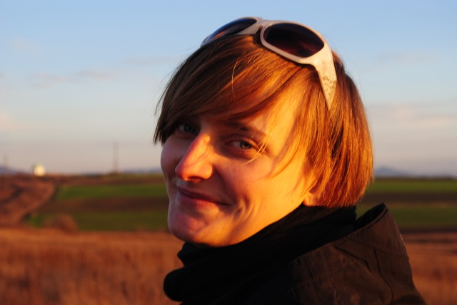

Placement Officers say Hi (and bye)!
"Hi" from the Placement Officers! We are Marta and Kateryna and every week, from Monday through Friday, we are waiting for your e-mails, phone calls and visits to the VIA Office! Learning Dutch is a process, so please, when communicating with us, use English. Marta has been doing placements for the last three months and has passed the task on to Kate, just before heading off to Kosovo. Kate has arrived from Ukraïne, a bit ill at first unfortunately, but ready to help you with the questions and place you in the camp of your liking. Read more...